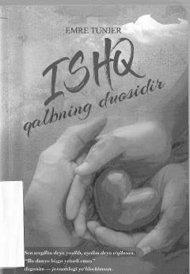

IQMuhabbat va insoniy tuyg'ular haqidagi ta'sirli turk romani.
Mazkur kitob inson qalbi, muhabbat va hayotiy tuyg'ularni chuqur ifoda etuvchi ta'sirli asar hisoblanadi. Muallif Emre Tunjer o'zining samimiy va falsafiy yondashuvi bilan kitobxonlarga sevgi, sadoqat va ruhiy xotirjamlik haqida hikoya qiladi. Asar turk tilidan o'zbek tiliga tarjima qilingan bo'lib, keng kitobxonlar omjasiga mo'ljallangan.